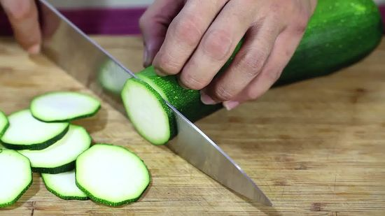
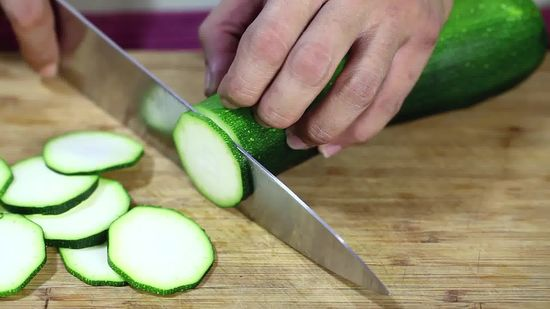
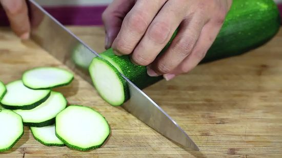

Sweet Potato Curry
Instructions
1. Put oil
in the hot
pot.

2. Cut onions and
peppers. Cook
for
3 minutes.
3. Put ginger and
garlic in the
pot. Cook for
2
minutes.

4. Peel sweet potatoes.
Cut sweet potatoes and
zucchini. Put
them in
the pot.

5. Put spices
in the pot.
6. Open the
tomato can. Put
tomatoes in the
pot.
7. Open the
coconut milk
can.
Put the coconut in
the pot.
8. Mix everything together.

9. Cook for
5 minutes.
10. Put cilantro in
the soup.